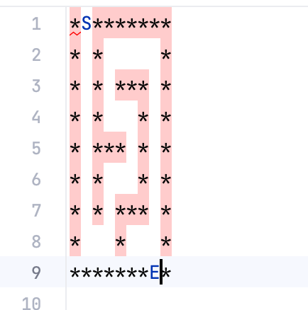
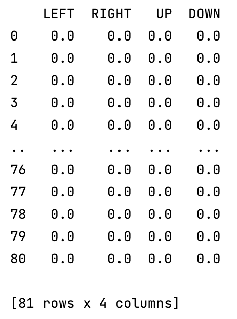
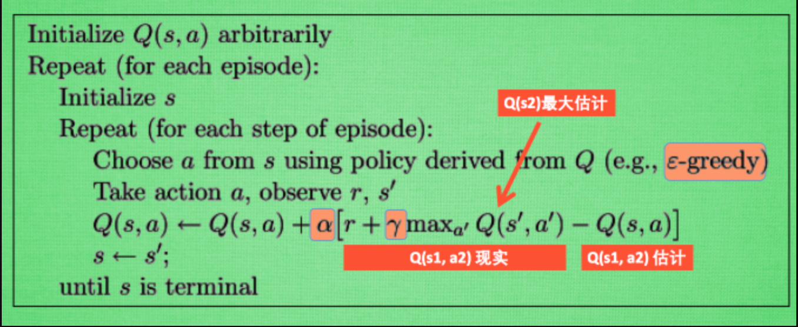
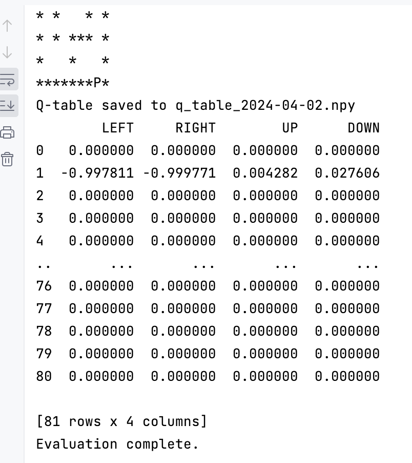
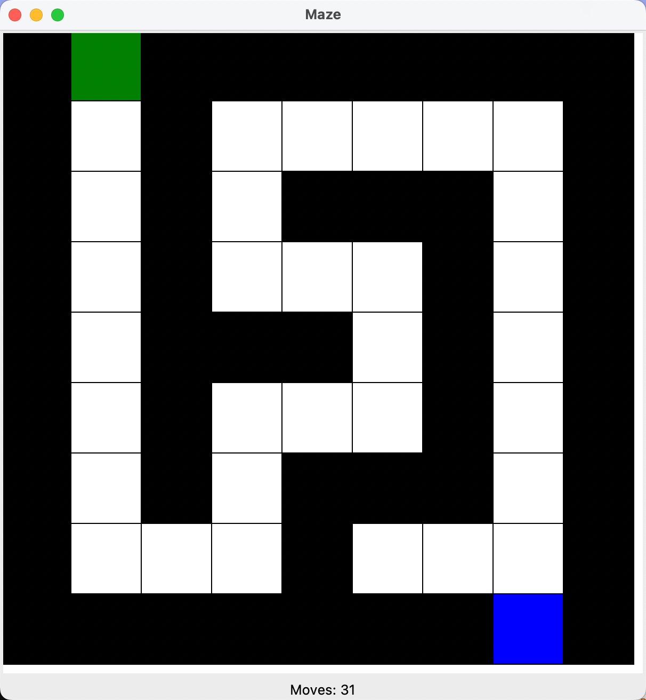
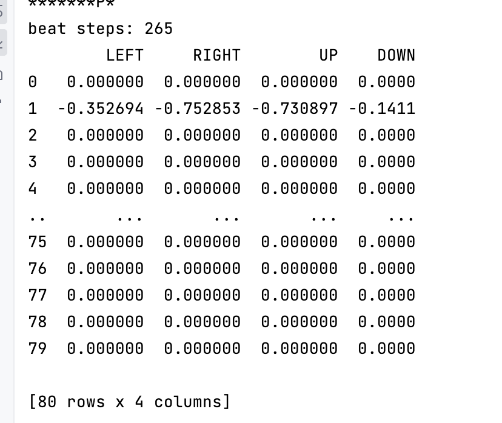

Reinforcement Learning Note
Q-Learning
原理
课程参考：https://www.bilibili.com/video/BV13W411Y75P
Q-Learning是属于值函数近似算法中，蒙特卡洛方法和时间差分法相结合的算法。这种算法使得智能体（agent）能够在与环境互动的过程中学习如何采取动作以最大化累积奖励。Q-learning特别适用于解决决策过程问题，尤其是那些状态和动作空间定义明确的问题。
Q-Learning 是一个离线策略（off-policy）学习算法。在Q-Learning中，智能体学习的是一个与其实际执行动作无关的优化策略。也就是说，当它在探索更多的状态-动作对时，它学习的是最优策略。同时，在更新q-table中的值时，并不考虑下一步实际执行的动作是什么，而是假设采取的是让next_state下q-table值最大的动作。
算法特性
无模型：Q-learning是一个无模型的强化学习算法，它不需要关于环境动态的先验知识
离线学习：Q-learning是一种离线策略学习方法，智能体的学习与其遵循的策略无关。
贪婪策略：在学习过程中，Q-learning采用贪婪策略在学习与探索间寻找平衡。即在大多数情况下选择当前估计最优的动作，但有时也会随机选择其他动作来探索未知的状态空间。
迷宫实例
Environment
-
迷宫生成
用于随机生成迷宫，或者加载一个生成好的迷宫。迷宫由
**代表墙，S代表起点，E代表终点class Maze: def __init__(self, width, height): self.width = width self.height = height self.maze = [['*' for _ in range(2 * height + 1)] for _ in range(2 * width + 1)] self.start_local = None self.final_local = None self.generate_maze() self._locate_start_and_final() def _break_wall(self, x, y): self.maze[2 * x + 1][2 * y + 1] = ' ' def _carve_passages_from(self, x, y): dire = [(1, 0), (-1, 0), (0, 1), (0, -1)] random.shuffle(dire) for dx, dy in dire: new_x = x + dx new_y = y + dy if 0 <= new_x < self.width and 0 <= new_y < self.height: if self.maze[2 * new_x + 1][2 * new_y + 1] == '*': self.maze[2 * x + 1 + dx][2 * y + 1 + dy] = ' ' # Break wall self._break_wall(new_x, new_y) self._carve_passages_from(new_x, new_y) def generate_maze(self): self._break_wall(0, 0) # Start point self._carve_passages_from(0, 0) self.maze[0][1] = 'S' # Mark the start point self.maze[2 * self.width][2 * self.height - 1] = 'E' # Mark the end point def _locate_start_and_final(self): self.start_local = None self.final_local = None for i, row in enumerate(self.maze): for j, char in enumerate(row): if char == 'S': self.start_local = (i, j) elif char == 'E': self.final_local = (i, j) if self.start_local is None or self.final_local is None: raise ValueError("起点或终点未在迷宫中找到。") def display(self, maze=None): if maze is None: for row in self.maze: print(''.join(row)) else: for row in maze: print(''.join(row)) def save(self, filename): with open(filename, 'w') as file: for row in self.maze: file.write(''.join(row) + '\n') @classmethod def load(cls, filename): with open(filename, 'r') as file: maze_data = [list(line.strip()) for line in file] # 假设文件内容确定迷宫尺寸且迷宫规格是规整的（每行长度相同） height = len(maze_data) width = len(maze_data[0]) if height > 0 else 0 maze_obj = cls(width, height) # 创建 Maze 实例 maze_obj.maze = maze_data maze_obj._locate_start_and_final() return maze_obj迷宫可以使用save保存在本地，方便下次训练使用，保存后的内容如下：

-
移动判定
理解为游戏的模拟输入，函数的输入为当前的坐标state(x,y)和接下来的行为action(u,d,l,f)。输出为执行完action后的坐标next_state，和奖励reward（用于判定是否达到终点）。
def get_env_feedback(self, state, action): """ 根据当前的状态和行动，返回下一个状态和奖励。 state: 当前的状态，即当前的坐标 (x, y) action: 当前采取的行动。'UP', 'DOWN', 'LEFT', 'RIGHT' 中的一个。 返回: 下一个状态和奖励。 """ # 计算下一步的位置 x, y = state if action == 'UP': next_state = (max(x - 1, 0), y) elif action == 'DOWN': next_state = (min(x + 1, 2 * self.height), y) elif action == 'LEFT': next_state = (x, max(y - 1, 0)) elif action == 'RIGHT': next_state = (x, min(y + 1, 2 * self.width)) else: next_state = state # 无效的行动 # 检查下一步是否为墙('*')或终点('E') next_x, next_y = next_state if self.maze[next_x][next_y] == '*': reward = -1 # 如果撞墙，给予负奖励 next_state = state # 状态不改变 elif self.maze[next_x][next_y] == 'E': reward = 1 # 如果到达终点，给予正奖励 else: reward = 0 # 否则，没有奖励 return next_state, reward -
索引转换
用于将x,y坐标转换为q-table索引的辅助方法
def state_to_index(self, state): """ 将 (x, y) 坐标转换为 q_table 的索引。 """ x, y = state index = x * self.width + y return index
Agent
使用q-leaning
-
创建q-leaning表
参数为n_states：迷宫的长*宽，actions：[‘LEFT’, ‘RIGHT’, ‘UP’, ‘DOWN’]
def build_q_table(n_states: int, actions: list[str]) -> pd.DataFrame: table = pd.DataFrame( np.zeros((n_states, len(actions))), columns=actions) return table
-
行动决策
首先获取当前位置(state_idx)的决策概率，例如state_idx=0时，state_actions = [0.0, 0.0, 0.0, 0.0]。这里有一个超参EPSILON，用于在行动决策中划分多少概率随机选择一次行动。如果不使用随机决策则会取当前state_actions中概率最大的一个决策。
def choose_action(state_idx, q_table: pd.DataFrame) -> str: # 根据当前state状态和q_table选择action state_actions: np.ndarray = q_table.iloc[state_idx, :] # 随机选择的情况1.刚好是10%的随机状态 2.初始化状态 if np.random.uniform() > (1 - EPSILON) or state_actions.all() == 0: action_name = np.random.choice(ACTIONS) else: action_name = state_actions.idxmax() return action_name
Train
当Agent和Environment都实现后，可以开始编写q-leaning的训练了。
def save_q_table(q_table):
# 获取当前日期并格式化为字符串
date_suffix = datetime.now().strftime("%Y-%m-%d")
filename = f"q_table_{date_suffix}.npy"
np.save(filename, q_table)
print(f"Q-table saved to {filename}")
def train(maze):
q_table = build_q_table(maze.width * maze.height, ACTIONS)
print(q_table)
for episode in range(STEP):
step_counter = 0
is_final = False
S = maze.start_local
maze.update_env(maze, S, episode=episode, step_counter=step_counter)
while not is_final:
S_INDEX = maze.state_to_index(S)
A = choose_action(S_INDEX, q_table)
observation_, reward = maze.get_env_feedback(S, A)
q_predict = q_table.loc[S_INDEX, A]
if reward != 1: # 判断是否达到迷宫终点
# 未到达时，获取下一个坐标的index，并且计算对应的q_target值
S__INDEX = maze.state_to_index(observation_)
# LAMBDA为衰减超参
q_target = reward + LAMBDA * q_table.iloc[S__INDEX, :].max()
else:
# 达到时 q_target=1
q_target = reward
is_final = True
# 更新参数，ALPHA为leaning-rate超参
q_table.loc[S_INDEX, A] += ALPHA * (q_target - q_predict) # 更新q-table
S = observation_
step_counter += 1
maze.update_env(maze, S, episode=episode, step_counter=step_counter)
q_table_numpy = q_table.to_numpy()
# 保存q-table
save_q_table(q_table_numpy)
return q_table
附算法图：

训练结果截图：

Evaluate
-
编写MazeGUI，为了让测试具像化，并且使用moves统计测试时使用的步骤
class MazeGUI: def __init__(self, maze): self.maze = maze self.root = tk.Tk() self.root.title("Maze") self.size = 600 # 窗口尺寸 self.cell_width = self.size // len(maze.maze[0]) self.cell_height = self.size // len(maze.maze) self.canvas = tk.Canvas(self.root, height=self.size, width=self.size, bg="white") self.canvas.pack() self.draw_maze() self.player = self.canvas.create_rectangle(0, 0, self.cell_width, self.cell_height, fill="blue") # 初始化玩家位置 self.gui_queue = Queue() self.process_queue_updates() self.moves = 0 # 用于步数统计 # 创建显示步数的Label组件 self.steps_label = tk.Label(self.root, text=f"Moves: {self.moves}") self.steps_label.pack() def draw_maze(self): for i, row in enumerate(self.maze.maze): for j, cell in enumerate(row): x0 = j * self.cell_width y0 = i * self.cell_height x1 = x0 + self.cell_width y1 = y0 + self.cell_height if cell == '*': # 墙壁 self.canvas.create_rectangle(x0, y0, x1, y1, fill="black") elif cell == 'E': # 终点 self.canvas.create_rectangle(x0, y0, x1, y1, fill="red") elif cell == 'S': # 起点 self.canvas.create_rectangle(x0, y0, x1, y1, fill="green") elif cell == ' ': # 空路 self.canvas.create_rectangle(x0, y0, x1, y1, fill="white") def update_player_position(self, new_position): self.moves += 1 # 步数统计 self.steps_label.config(text=f"Moves: {self.moves}") x, y = new_position if x < 0 or y < 0 or x >= self.maze.height or y >= self.maze.width: print("Invalid move: Player cannot move outside the maze.") return # 返回，不执行移动 # 检查新位置是否是墙壁 if self.maze.maze[x][y] == '*': print("Invalid move: Player cannot move into a wall.") else: # 更新玩家在画布上的坐标位置 self.canvas.coords(self.player, y * self.cell_width, # 左上角x坐标 x * self.cell_height, # 左上角y坐标 (y + 1) * self.cell_width, # 右下角x坐标 (x + 1) * self.cell_height) # 右下角y坐标 def process_queue_updates(self): try: while not self.gui_queue.empty(): new_position = self.gui_queue.get_nowait() # 假设你有一个方法来处理实际的更新 self.update_player_position(new_position) except self.gui_queue.Empty: pass # 每隔100ms检查队列更新 self.root.after(100, self.process_queue_updates) def show_steps(self): # 这个方法被调用时，会作出计数并弹窗显示移动次数 messagebox.showinfo("Steps", f"Number of moves: {self.moves}") def reset(self): # # 清除画布上的所有内容 # self.canvas.delete("all") # # self.draw_maze() # 将玩家移动到迷宫的起点 self.update_player_position(self.maze.start_local) def run(self): self.root.mainloop() -
编写eval函数，验证时不需要采用随机化决策，直接从q-table中获取每一步的最大值决策即可。
def eval(q_table, maze_gui): S = maze_gui.maze.start_local is_final = False maze_gui.reset() # 重置迷宫到初始状态，并在GUI中更新 while not is_final: S_INDEX = maze_gui.maze.state_to_index(S) # 总是选择最佳动作 A = q_table.iloc[S_INDEX, :].idxmax() observation_, reward = maze_gui.maze.get_env_feedback(S, A) # 对 GUI 做出更新 maze_gui.gui_queue.put(observation_) # 延迟一小段时间，以便观察到玩家移动 time.sleep(0.3) S = observation_ # 更新当前状态 # 终点检测 if reward == 1: is_final = True print("Evaluation complete.")
完整实例
import random
import tkinter as tk
from tkinter import messagebox
from queue import Queue
class MazeGUI:
def __init__(self, maze):
self.maze = maze
self.root = tk.Tk()
self.root.title("Maze")
self.size = 600 # 窗口尺寸
self.cell_width = self.size // len(maze.maze[0])
self.cell_height = self.size // len(maze.maze)
self.canvas = tk.Canvas(self.root, height=self.size, width=self.size, bg="white")
self.canvas.pack()
self.draw_maze()
self.player = self.canvas.create_rectangle(0, 0, self.cell_width, self.cell_height, fill="blue") # 初始化玩家位置
self.gui_queue = Queue()
self.process_queue_updates()
self.moves = 0 # 用于步数统计
# 创建显示步数的Label组件
self.steps_label = tk.Label(self.root, text=f"Moves: {self.moves}")
self.steps_label.pack()
def draw_maze(self):
for i, row in enumerate(self.maze.maze):
for j, cell in enumerate(row):
x0 = j * self.cell_width
y0 = i * self.cell_height
x1 = x0 + self.cell_width
y1 = y0 + self.cell_height
if cell == '*': # 墙壁
self.canvas.create_rectangle(x0, y0, x1, y1, fill="black")
elif cell == 'E': # 终点
self.canvas.create_rectangle(x0, y0, x1, y1, fill="red")
elif cell == 'S': # 起点
self.canvas.create_rectangle(x0, y0, x1, y1, fill="green")
elif cell == ' ': # 空路
self.canvas.create_rectangle(x0, y0, x1, y1, fill="white")
def update_player_position(self, new_position):
self.moves += 1 # 步数统计
self.steps_label.config(text=f"Moves: {self.moves}")
x, y = new_position
if x < 0 or y < 0 or x >= self.maze.height or y >= self.maze.width:
print("Invalid move: Player cannot move outside the maze.")
return # 返回，不执行移动
# 检查新位置是否是墙壁
if self.maze.maze[x][y] == '*':
print("Invalid move: Player cannot move into a wall.")
else:
# 更新玩家在画布上的坐标位置
self.canvas.coords(self.player,
y * self.cell_width, # 左上角x坐标
x * self.cell_height, # 左上角y坐标
(y + 1) * self.cell_width, # 右下角x坐标
(x + 1) * self.cell_height) # 右下角y坐标
def process_queue_updates(self):
try:
while not self.gui_queue.empty():
new_position = self.gui_queue.get_nowait()
# 假设你有一个方法来处理实际的更新
self.update_player_position(new_position)
except self.gui_queue.Empty:
pass
# 每隔100ms检查队列更新
self.root.after(100, self.process_queue_updates)
def show_steps(self):
# 这个方法被调用时，会作出计数并弹窗显示移动次数
messagebox.showinfo("Steps", f"Number of moves: {self.moves}")
def reset(self):
# # 清除画布上的所有内容
# self.canvas.delete("all")
#
# self.draw_maze()
# 将玩家移动到迷宫的起点
self.update_player_position(self.maze.start_local)
def run(self):
self.root.mainloop()
class Maze:
def __init__(self, width, height):
self.width = width
self.height = height
self.maze = [['*' for _ in range(2 * height + 1)] for _ in range(2 * width + 1)]
self.start_local = None
self.final_local = None
self.generate_maze()
self._locate_start_and_final()
def _break_wall(self, x, y):
self.maze[2 * x + 1][2 * y + 1] = ' '
def _carve_passages_from(self, x, y):
dire = [(1, 0), (-1, 0), (0, 1), (0, -1)]
random.shuffle(dire)
for dx, dy in dire:
new_x = x + dx
new_y = y + dy
if 0 <= new_x < self.width and 0 <= new_y < self.height:
if self.maze[2 * new_x + 1][2 * new_y + 1] == '*':
self.maze[2 * x + 1 + dx][2 * y + 1 + dy] = ' ' # Break wall
self._break_wall(new_x, new_y)
self._carve_passages_from(new_x, new_y)
def generate_maze(self):
self._break_wall(0, 0) # Start point
self._carve_passages_from(0, 0)
self.maze[0][1] = 'S' # Mark the start point
self.maze[2 * self.width][2 * self.height - 1] = 'E' # Mark the end point
def _locate_start_and_final(self):
self.start_local = None
self.final_local = None
for i, row in enumerate(self.maze):
for j, char in enumerate(row):
if char == 'S':
self.start_local = (i, j)
elif char == 'E':
self.final_local = (i, j)
if self.start_local is None or self.final_local is None:
raise ValueError("起点或终点未在迷宫中找到。")
def display(self, maze=None):
if maze is None:
for row in self.maze:
print(''.join(row))
else:
for row in maze:
print(''.join(row))
def save(self, filename):
with open(filename, 'w') as file:
for row in self.maze:
file.write(''.join(row) + '\n')
@classmethod
def load(cls, filename):
with open(filename, 'r') as file:
maze_data = [list(line.strip()) for line in file]
# 假设文件内容确定迷宫尺寸且迷宫规格是规整的（每行长度相同）
height = len(maze_data)
width = len(maze_data[0]) if height > 0 else 0
maze_obj = cls(width, height) # 创建 Maze 实例
maze_obj.maze = maze_data
maze_obj._locate_start_and_final()
return maze_obj
def get_env_feedback(self, state, action):
"""
根据当前的状态和行动，返回下一个状态和奖励。
state: 当前的状态，即当前的坐标 (x, y)
action: 当前采取的行动。'UP', 'DOWN', 'LEFT', 'RIGHT' 中的一个。
返回: 下一个状态和奖励。
"""
# 计算下一步的位置
x, y = state
if action == 'UP':
next_state = (max(x - 1, 0), y)
elif action == 'DOWN':
next_state = (min(x + 1, 2 * self.height), y)
elif action == 'LEFT':
next_state = (x, max(y - 1, 0))
elif action == 'RIGHT':
next_state = (x, min(y + 1, 2 * self.width))
else:
next_state = state # 无效的行动
# 检查下一步是否为墙('*')或终点('E')
next_x, next_y = next_state
if self.maze[next_x][next_y] == '*':
reward = -1 # 如果撞墙，给予负奖励
next_state = state # 状态不改变
elif self.maze[next_x][next_y] == 'E':
reward = 1 # 如果到达终点，给予正奖励
else:
reward = 0 # 否则，没有奖励
return next_state, reward
def update_env(self, maze, state, episode, step_counter):
if state == maze.final_local:
# 先创建一个迷宫的副本以便更新显示
updated_maze = [row.copy() for row in maze.maze]
# 确定玩家的当前位置，并标记，在这个例子中，我们使用 'P' 来表示玩家的当前位置
x, y = state # 假设状态为 (x, y) 坐标的函数
updated_maze[x][y] = 'P' # 'P' 表示玩家当前位置
# 清屏操作，以便更新时清除旧的迷宫状态
print("\033[H\033[J", end="")
print(f"Episode: {episode}, Step: {step_counter}")
self.display(updated_maze) # 假设 print_maze 是打印迷宫状态的函数
def state_to_index(self, state):
"""
将 (x, y) 坐标转换为 q_table 的索引。
"""
x, y = state
index = x * self.width + y
return index
import random
import time
from datetime import datetime
import threading
import numpy as np
import pandas as pd
from MazeGen import MazeGUI, Maze
# 超参
ACTIONS = ['LEFT', 'RIGHT', 'UP', 'DOWN']
EPSILON = 0.1 # 贪婪策略，决策概率（0.1部分为随机）
ALPHA = 0.1 # learning rate
LAMBDA = 0.9 # 衰减值： 0完全不看未来的见过，1考虑未来的每一个结果
STEP = 300 # 训练轮数
FRESH_TIME = 0.3 # 每一步骤停顿时间
random.seed(13)
def build_q_table(n_states: int, actions: list[str]) -> pd.DataFrame:
table = pd.DataFrame(
np.zeros((n_states, len(actions))),
columns=actions)
return table
def choose_action(state_idx, q_table: pd.DataFrame) -> str:
# 根据当前state状态和q_table选择action
state_actions: np.ndarray = q_table.iloc[state_idx, :]
# 随机选择的情况1.刚好是10%的随机状态 2.初始化状态
if np.random.uniform() > EPSILON or state_actions.all() == 0:
action_name = np.random.choice(ACTIONS)
else:
action_name = state_actions.idxmax()
return action_name
def save_q_table(q_table):
# 获取当前日期并格式化为字符串
date_suffix = datetime.now().strftime("%Y-%m-%d")
filename = f"q_table_{date_suffix}.npy"
np.save(filename, q_table)
print(f"Q-table saved to {filename}")
def train(maze):
q_table = build_q_table(maze.width * maze.height, ACTIONS)
print(q_table)
for episode in range(STEP):
step_counter = 0
is_final = False
S = maze.start_local
maze.update_env(maze, S, episode=episode, step_counter=step_counter)
while not is_final:
S_INDEX = maze.state_to_index(S)
A = choose_action(S_INDEX, q_table)
observation_, reward = maze.get_env_feedback(S, A)
q_predict = q_table.loc[S_INDEX, A]
if reward != 1:
S__INDEX = maze.state_to_index(observation_)
q_target = reward + LAMBDA * q_table.iloc[S__INDEX, :].max()
else:
q_target = reward
is_final = True
q_table.loc[S_INDEX, A] += ALPHA * (q_target - q_predict) # 更新q-table
S = observation_
step_counter += 1
maze.update_env(maze, S, episode=episode, step_counter=step_counter)
q_table_numpy = q_table.to_numpy()
# 保存q-table
save_q_table(q_table_numpy)
return q_table
def eval(q_table, maze_gui):
S = maze_gui.maze.start_local
is_final = False
maze_gui.reset() # 重置迷宫到初始状态，并在GUI中更新
while not is_final:
S_INDEX = maze_gui.maze.state_to_index(S)
# 总是选择最佳动作
A = q_table.iloc[S_INDEX, :].idxmax()
observation_, reward = maze_gui.maze.get_env_feedback(S, A)
# 对 GUI 做出更新
maze_gui.gui_queue.put(observation_)
# 延迟一小段时间，以便观察到玩家移动
time.sleep(0.3)
S = observation_ # 更新当前状态
# 终点检测
if reward == 1:
is_final = True
print("Evaluation complete.")
if __name__ == '__main__':
maze = Maze.load('my_maze.txt')
q_table = train(maze)
print(q_table)
maze_gui = MazeGUI(maze)
threading.Thread(target=lambda: eval(q_table, maze_gui)).start()
maze_gui.root.mainloop()
# 创建并显示迷宫实例
# my_maze = Maze(4,4)
# print("Generated Maze:")
# # my_maze.display()
# #
# # # 保存迷宫到文件
# my_maze.save('my_maze.txt')
#
# # # 从文件加载并显示迷宫
# loaded_maze = Maze.load('my_maze.txt')
# app = MazeGUI(loaded_maze)
# app.run() # 显示迷宫
# print("\nLoaded Maze:")
# loaded_maze.display()
最终效果展示：

存在问题
- q-table创建没有使用动态创建，这会导致q-table的index不足或者浪费的情况出现。
- chooce action中idxmax只返回在请求轴上第一次出现最大值的索引，这回忽略当出现每种决策相同概率时 只会选择第一个的问题。
解决方案
- 对QLearning单独建立类，并且初始化q_table内容为空。利用check_state_exist检查当前states索引以及之前的索引是否存在，不存在则新建。
- 使用state_actions.sample(frac=1)来打乱action所在位置，sample函数用于随机样本获取。
- 修改save_q_table时，依赖当前路径的总步数，保存最优解
class QLearning:
def __init__(self, actions: list[str], learning_rate=0.1, reward_decay=0.9, epsilon=0.1):
self.actions = actions # 动作空间
self.lr = learning_rate # 学习率
self.gamma = reward_decay # 奖励衰减
self.epsilon = epsilon # 探索概率
self.q_table = pd.DataFrame(columns=self.actions, dtype=np.float64) # 初始化空的Q表
self.min_steps = float('inf') # 初始化最少步数为无穷大
self.best_q_table = None # 存储步数最少时的Q表
def check_state_exist(self, state):
# 检查并添加状态到Q表，包括之前的所有未添加的状态
if state not in self.q_table.index:
# 假设状态是整数且连续，我们需要填补所有缺失的状态，直至当前状态
missing_states = [s for s in
range(min(self.q_table.index.astype(int).min(), state) if not self.q_table.empty else 0,
state + 1) if s not in self.q_table.index]
for s in missing_states:
# 添加缺失的状态到Q表
self.q_table = self.q_table._append(
pd.Series(
[0] * len(self.actions),
index=self.q_table.columns,
name=s,
)
)
def choose_action(self, state):
self.check_state_exist(state) # 确保状态在Q表中
# 根据当前状态来选择动作
state_actions: np.ndarray = self.q_table.iloc[state, :]
if np.random.uniform() < self.epsilon or state_actions.all() == 0:
# 探索：以ε的概率执行随机动作
action = np.random.choice(self.actions)
else:
# 利用：以1 - ε的概率执行当前最优动作（贪婪选择）
shuffled_actions = state_actions.sample(frac=1) # 使用sample与frac=1来随机打乱
action = shuffled_actions.idxmax()
return action
def save_q_table(self, steps):
if steps < self.min_steps:
self.min_steps = steps
self.best_q_table = self.q_table.copy() # 更新最佳Q表副本
date_suffix = datetime.now().strftime("%Y-%m-%d")
filename = f"q_learning_q_table_{date_suffix}.npy"
np.save(filename, self.best_q_table)
print(f"Q-table saved to {filename}")
def learn(self, s, a, r, s_):
# 学习过程，根据q-learning公式更新Q表
q_predict = self.q_table.loc[s, a]
if r != 1:
s__idx = maze.state_to_index(s_)
self.check_state_exist(s__idx) # 确保next_states在Q表中
q_target = r + self.gamma * self.q_table.iloc[s__idx, :].max()
else:
q_target = r
self.q_table.loc[s, a] += self.lr * (q_target - q_predict) # 更新q-table
更新后的train，实时保存最优解
def train(maze):
q_learning = QLearning(ACTIONS, learning_rate=ALPHA, reward_decay=LAMBDA, epsilon=EPSILON)
for episode in range(STEP):
step_counter = 0
S = maze.start_local
maze.update_env(maze, S, episode=episode, step_counter=step_counter)
while True:
S_INDEX = maze.state_to_index(S)
A = q_learning.choose_action(S_INDEX)
observation_, reward = maze.get_env_feedback(S, A)
q_learning.learn(S_INDEX, A, reward, observation_)
S = observation_
step_counter += 1
maze.update_env(maze, S, episode=episode, step_counter=step_counter)
if reward == 1:
break
q_learning.save_q_table(step_counter)
print("beat steps: {}".format(q_learning.min_steps))
return q_learning.best_q_table
Sarsa
原理
参考视频：https://www.bilibili.com/video/BV13W411Y75P
与Q-Learning不同，SARSA 是一个在线策略（on-policy）学习算法。这意味着它在更新值函数时考虑了当前策略下智能体实际会执行的动作。
算法特点
在线策略（On-policy）：SARSA评估和改进的是同一策略，即智能体在学习时实际遵循的策略。
探索与利用：通过 ε-贪婪策略或其他策略可以平衡探索（exploration）新状态-动作对和利用（exploitation）已知的最佳状态-动作对。
收敛性：在适当的条件下（如足够长时间的训练和适当的衰减学习率），SARSA算法可以收敛到最优策略。
与Q-Learning主要区别
- 策略类型：Q-Learning 是离线策略，意味着它在学习最优策略时无需遵循该策略。相反，SARSA 是在线策略，它必须遵循当前的策略进行学习。
- 风险态度：由于 Q-Learning 考虑的是最优动作，它可能会表现得更加积极（风险偏好）。而SARSA将会考虑当前的探索水平，因此它在更新过程中可能更加保守（风险规避）。
- 收敛性：两者都可以在适当的条件下收敛到最优策略。然而，在含有随机因素或是动作选择有噪声的情况下，由于SARSA较为保守，它通常会更稳健一些。
迷宫实例
Environment
与Q-learning完全一致
Agent
基本与Q-learning一致，只有learn函数需要修改为sarsa算法
class Sarsa:
def __init__(self, actions: list[str], learning_rate=0.1, reward_decay=0.9, epsilon=0.1):
self.actions = actions # 动作空间
self.lr = learning_rate # 学习率
self.gamma = reward_decay # 奖励衰减
self.epsilon = epsilon # 探索概率
self.q_table = pd.DataFrame(columns=self.actions, dtype=np.float64) # 初始化空的Q表
self.min_steps = float('inf') # 初始化最少步数为无穷大
self.best_q_table = None # 存储步数最少时的Q表
def check_state_exist(self, state):
# 检查并添加状态到Q表，包括之前的所有未添加的状态
if state not in self.q_table.index:
# 假设状态是整数且连续，我们需要填补所有缺失的状态，直至当前状态
missing_states = [s for s in
range(min(self.q_table.index.astype(int).min(), state) if not self.q_table.empty else 0,
state + 1) if s not in self.q_table.index]
for s in missing_states:
# 添加缺失的状态到Q表
self.q_table = self.q_table._append(
pd.Series(
[0] * len(self.actions),
index=self.q_table.columns,
name=s,
)
)
def choose_action(self, state):
self.check_state_exist(state) # 确保状态在Q表中
# 根据当前状态来选择动作
state_actions: np.ndarray = self.q_table.iloc[state, :]
if np.random.uniform() < self.epsilon or state_actions.all() == 0:
# 探索：以ε的概率执行随机动作
action = np.random.choice(self.actions)
else:
# 利用：以1 - ε的概率执行当前最优动作（贪婪选择）
shuffled_actions = state_actions.sample(frac=1) # 使用sample与frac=1来随机打乱
action = shuffled_actions.idxmax()
return action
def save_q_table(self, steps):
if steps < self.min_steps:
self.min_steps = steps
self.best_q_table = self.q_table.copy(deep=True) # 更新最佳Q表副本
date_suffix = datetime.now().strftime("%Y-%m-%d")
filename = f"sarsa_q_table_{date_suffix}.npy"
np.save(filename, self.best_q_table)
print(f"Q-table saved to {filename}")
def learn(self, s, a, r, next_s, next_action):
self.check_state_exist(next_s) # 确保next_states在Q表中
# 学习过程，根据q-learning公式更新Q表
q_predict = self.q_table.loc[s, a]
if r != 1:
q_target = r + self.gamma * self.q_table.loc[next_s, next_action] # 只对next action进行计算
else:
q_target = r
self.q_table.loc[s, a] += self.lr * (q_target - q_predict) # 更新q-table
Train
需要将action计算放在初始轮中，并且迭代。
def train(maze):
sarsa = Sarsa(ACTIONS, learning_rate=ALPHA, reward_decay=LAMBDA, epsilon=EPSILON)
for episode in range(STEP):
step_counter = 0
S = maze.start_local
S_INDEX = maze.state_to_index(S)
A = sarsa.choose_action(S_INDEX)
maze.update_env(maze, S, episode=episode, step_counter=step_counter)
while True:
observation_, reward = maze.get_env_feedback(S, A)
next_s_idx = maze.state_to_index(observation_)
next_action = sarsa.choose_action(next_s_idx)
sarsa.learn(S_INDEX, A, reward, next_s_idx, next_action)
S = observation_
A = next_action
step_counter += 1
maze.update_env(maze, S, episode=episode, step_counter=step_counter)
if reward == 1:
break
sarsa.save_q_table(step_counter)
print("beat steps: {}".format(sarsa.min_steps))
return sarsa.best_q_table
训练结果截图(注意 由于保守的策略，需要更多轮训练才会得到最优的结果)：

Evaluate
与q-learning完全一致
完整代码
import random
import threading
import time
from datetime import datetime
import pandas as pd
import numpy as np
from MazeGen import MazeGUI, Maze
ACTIONS = ['LEFT', 'RIGHT', 'UP', 'DOWN']
EPSILON = 0.2 # 策略选择
ALPHA = 0.1 # learning rate
LAMBDA = 0.9 # 衰减值： 0完全不看未来的结果，1考虑未来的每一个结果
STEP = 100 # 训练轮数
FRESH_TIME = 0.3 # 每一步骤停顿时间
random.seed(13)
class Sarsa:
def __init__(self, actions: list[str], learning_rate=0.1, reward_decay=0.9, epsilon=0.1):
self.actions = actions # 动作空间
self.lr = learning_rate # 学习率
self.gamma = reward_decay # 奖励衰减
self.epsilon = epsilon # 探索概率
self.q_table = pd.DataFrame(columns=self.actions, dtype=np.float64) # 初始化空的Q表
self.min_steps = float('inf') # 初始化最少步数为无穷大
self.best_q_table = None # 存储步数最少时的Q表
def check_state_exist(self, state):
# 检查并添加状态到Q表，包括之前的所有未添加的状态
if state not in self.q_table.index:
# 假设状态是整数且连续，我们需要填补所有缺失的状态，直至当前状态
missing_states = [s for s in
range(min(self.q_table.index.astype(int).min(), state) if not self.q_table.empty else 0,
state + 1) if s not in self.q_table.index]
for s in missing_states:
# 添加缺失的状态到Q表
self.q_table = self.q_table._append(
pd.Series(
[0] * len(self.actions),
index=self.q_table.columns,
name=s,
)
)
def choose_action(self, state):
self.check_state_exist(state) # 确保状态在Q表中
# 根据当前状态来选择动作
state_actions: np.ndarray = self.q_table.iloc[state, :]
if np.random.uniform() < self.epsilon or state_actions.all() == 0:
# 探索：以ε的概率执行随机动作
action = np.random.choice(self.actions)
else:
# 利用：以1 - ε的概率执行当前最优动作（贪婪选择）
shuffled_actions = state_actions.sample(frac=1) # 使用sample与frac=1来随机打乱
action = shuffled_actions.idxmax()
return action
def save_q_table(self, steps):
if steps < self.min_steps:
self.min_steps = steps
self.best_q_table = self.q_table.copy(deep=True) # 更新最佳Q表副本
date_suffix = datetime.now().strftime("%Y-%m-%d")
filename = f"sarsa_q_table_{date_suffix}.npy"
np.save(filename, self.best_q_table)
print(f"Q-table saved to {filename}")
def learn(self, s, a, r, next_s, next_action):
self.check_state_exist(next_s) # 确保next_states在Q表中
# 学习过程，根据q-learning公式更新Q表
q_predict = self.q_table.loc[s, a]
if r != 1:
q_target = r + self.gamma * self.q_table.loc[next_s, next_action] # 只对next action进行计算
else:
q_target = r
self.q_table.loc[s, a] += self.lr * (q_target - q_predict) # 更新q-table
def train(maze):
sarsa = Sarsa(ACTIONS, learning_rate=ALPHA, reward_decay=LAMBDA, epsilon=EPSILON)
for episode in range(STEP):
step_counter = 0
S = maze.start_local
S_INDEX = maze.state_to_index(S)
A = sarsa.choose_action(S_INDEX)
maze.update_env(maze, S, episode=episode, step_counter=step_counter)
while True:
observation_, reward = maze.get_env_feedback(S, A)
next_s_idx = maze.state_to_index(observation_)
next_action = sarsa.choose_action(next_s_idx)
sarsa.learn(S_INDEX, A, reward, next_s_idx, next_action)
S = observation_
A = next_action
step_counter += 1
maze.update_env(maze, S, episode=episode, step_counter=step_counter)
if reward == 1:
break
sarsa.save_q_table(step_counter)
print("beat steps: {}".format(sarsa.min_steps))
return sarsa.best_q_table
def eval(q_table, maze_gui):
S = maze_gui.maze.start_local
is_final = False
maze_gui.reset() # 重置迷宫到初始状态，并在GUI中更新
while not is_final:
S_INDEX = maze_gui.maze.state_to_index(S)
# 总是选择最佳动作
A = q_table.iloc[S_INDEX, :].idxmax()
observation_, reward = maze_gui.maze.get_env_feedback(S, A)
# 对 GUI 做出更新
maze_gui.gui_queue.put(observation_)
# 延迟一小段时间，以便观察到玩家移动
time.sleep(0.3)
S = observation_ # 更新当前状态
# 终点检测
if reward == 1:
is_final = True
print("Evaluation complete.")
if __name__ == '__main__':
maze = Maze.load('my_maze.txt')
q_table = train(maze)
print(q_table)
maze_gui = MazeGUI(maze)
threading.Thread(target=lambda: eval(q_table, maze_gui)).start()
maze_gui.root.mainloop()